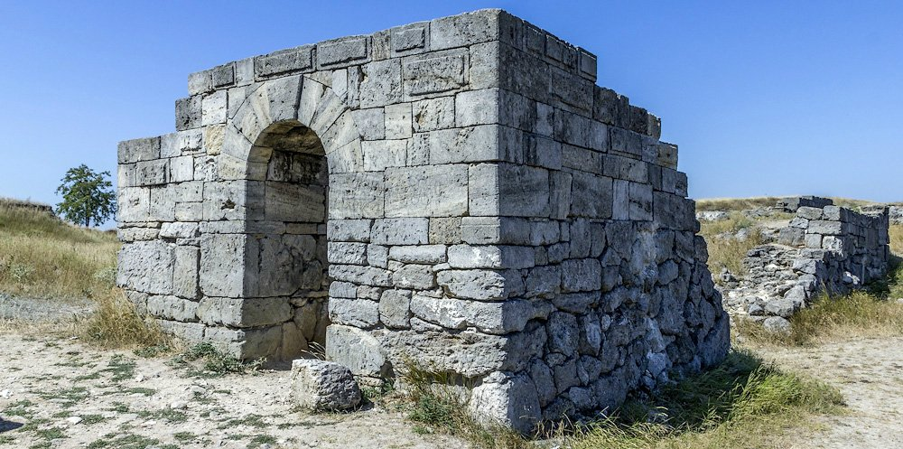
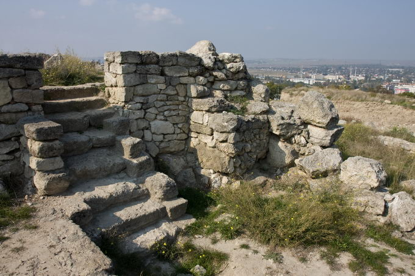
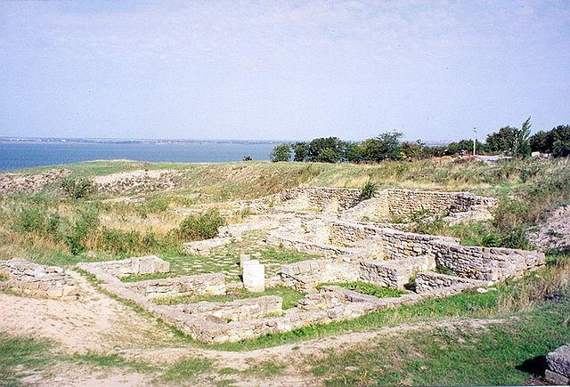
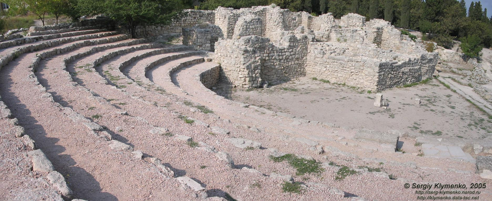

Пам'ятки України
Доба Київської Русі
6 - 13 століттяАнтичний крим
   
Цікаві факти:
Першим відомим за назвою населенням Криму були кімерійці (XII століття до н. е.), згадувані в античних джерелах Ассирії. Це були скотарські племена іранського походження. Їхнє перебування у Криму підтверджується стародавніми і середньовічними істориками, а також топонімами східної частини Криму: Кімерійські переправи, Кімерік. У середині VII століття до н. е. частина кімерійців була витіснена скіфами зі степової смуги в передгір'я і гори Криму, де вони утворили компактні поселення.
В 1 тисячолітті до н. е. у передгірному і гірському Криму, а також на південному узбережжі, мешкали таври. Від таврів походить стародавня назва гірської і прибережної частини Криму: Таврика, Таврія, Таврида. До 21 століття збереглися і були досліджені залишки укріплених сховищ і житлових споруд таврів, їхні кромлехи (кільцеподібні огорожі з вертикально поставлених каменів) і таврські гробниці — кам'яні скрині.